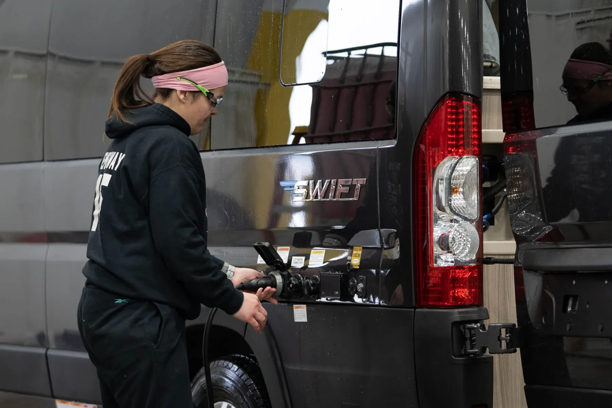
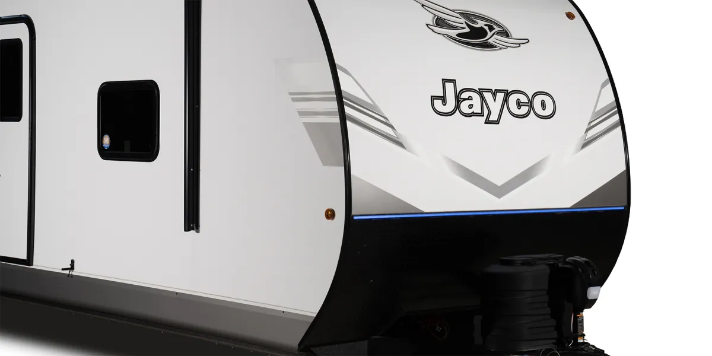

Every one of them.
Not a sample. Not the motorhomes only. Since November 2022, every coach Jayco builds is inspected in a separate building before it is allowed to leave for a dealer.
Pre-delivery inspection is the industry's name for the last check before a coach goes to a dealer — and for most of the industry it is a sample of the build, done on the line that built it. Jayco's is neither. It happens in its own building, on its own lines, staffed by people whose only job is to find what the build missed, and it happens to every unit.
That took four years to reach. What follows is the whole of it: when it started, when it became universal, where it happens now and what an inspector is actually looking at.
From some
to all.
Jayco began inspecting units in January 2019. Three years later it was most of them. On 25 November 2022 it became all of them, across every brand and every plant.
-
Jan 2019
The program starts. One dedicated facility, and a share of the lineup going through it.
-
Jan 2022
55% of all units — including every motorized coach, and everything built in Twin Falls, Idaho and Shipshewana, Indiana.
-
Nov 2022
The fifth PDI facility opens on Southridge Boulevard and the last gap closes. Every unit, every brand, every plant.
- 70,000 Approximate square feet of the Southridge Boulevard facility in Middlebury, Indiana — a building that exists to inspect, not to build.
- 4 Inspection lines running at the same time, which is what makes inspecting everything a schedule rather than an ambition.
- 5th Dedicated PDI facility in the group. The other four did not close when this one opened; it was the capacity that finished the job.
- 4 Brands covered — Jayco, Entegra Coach®, Starcraft RV® and Highland Ridge RV®.
- Middlebury, Indiana Where most of the lineup is built, and where the Southridge PDI facility stands.
- Shipshewana, Indiana Inspecting 100% of its output from January 2022, ten months ahead of the rest.
- Twin Falls, Idaho The western plant, also at 100% from January 2022.

It starts at the door-side corner.
And it works around the coach from there, in the same order every time. An inspection with a route does not depend on the inspector remembering what they have already looked at — which is the difference between a checklist and a walk-through.
Each unit is checked twice over, in effect: the audits and quality checks that happen on the production line, and then this, in a different building, by different people.
Seven systems
and the finish.
Jayco groups the inspection into measurements, systems and appearance. The last one is not an afterthought — a scuff you would have noticed on the lot is a warranty visit that never happens.
-
Measurements
Dimensions verified against the drawing rather than eyeballed. A slide that is a quarter-inch out closes for years before it does not.
-
Electronics
Every powered thing switched on and watched: lighting, displays, controls, the monitor panel, and anything that answers to an app.
-
Components
The right part, in the right place, in the right specification — checked against the build sheet for that unit, not against the model.
-
Plumbing
Fresh, gray and black systems run and pressure-checked. Water finds a fault faster than any inspector, so it is used to.
-
Heating and cooling
The HVAC brought up and held, both directions, with the airflow followed to each register rather than judged at the unit.
-
Safety devices
The detection and safety equipment fitted to the coach, tested rather than counted.
-
Structure
Roof, walls and flooring — the parts that are expensive to reach later and cheap to catch here.
-
A road test
Motorized coaches are driven, so the operational systems are judged moving rather than parked.
-
Cosmetics
Fit, finish and surfaces, to the standard a buyer will hold it to on the lot rather than to the standard a factory would accept.
The whole walk, start to finish.
Watch the inspection on jaycofamily.com (opens in a new tab)Why it was
worth doing.
Achieving 100% of our units being PDIed has been a true team effort.
We know the critical importance of optimizing quality and reducing RECT. These are areas we have committed to focusing our time and investments to further support our dealer partners, reducing their costs and positively impacting the overall customer experience.
About the inspection.
Yes. A dealer does its own pre-delivery work before it hands a coach over, and that is a separate thing from this — Jayco's inspection happens before the coach is shipped. The point of doing it in Middlebury is that the faults a factory can fix are fixed at the factory. Your dealer will tell you what their own handover covers.
No — they work at different ends. The inspection is meant to stop a fault reaching you; the 2+3 warranty covers you if one does. Two years of limited coverage plus three years of structural protection, which is twice the term the industry treats as standard.
All four in the group: Jayco, Entegra Coach®, Starcraft RV® and Highland Ridge RV®. It applies to towables and motorized alike, and to everything built in Middlebury and Shipshewana, Indiana and in Twin Falls, Idaho.
You can see the plant. Jayco runs free factory tours in Middlebury on Tuesdays and Thursdays by pre-registration — details are on Visit Us. The inspection facility is a separate building on Southridge Boulevard and is not part of the public tour route.
It is corrected before the coach ships. That is the whole reason the inspection sits between the line and the transporter rather than after it — a repair done in the building that built the coach costs a dealer nothing and costs you no time at all.